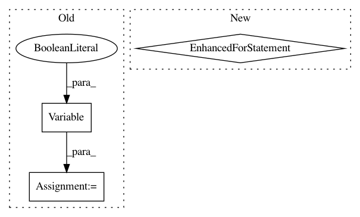

b87368e1e7fd832b505db9cc08015ac7af8f95de,VAE/main.py,,test,#Any#,115
Before Change
batch_data_t = torch.FloatTensor(TEST_BATCH_SIZE, 784)
if cuda:
batch_data_t = batch_data_t.cuda()
batch_data = Variable(batch_data_t, volatile=True)
for i in range(0, test_data.size(0), TEST_BATCH_SIZE):
print("Testing model: {}/{}".format(i, test_data.size(0)), end="\r")
batch_data.data[:] = test_data[i:i + TEST_BATCH_SIZE]
recon_batch_data, mu, logvar = model(batch_data)
After Change
def test(epoch):
model.eval()
test_loss = 0
for batch in test_loader:
batch = Variable(batch)
recon_batch, mu, logvar = model(batch)
test_loss += loss_function(recon_batch, batch, mu, logvar)
test_loss = test_loss.data[0] / test_data.size(0)
print("====> Test set results: {:.4f}".format(test_loss))
In pattern: SUPERPATTERN
Frequency: 3
Non-data size: 3
Instances
Project Name: OpenNMT/OpenNMT-py
Commit Name: b87368e1e7fd832b505db9cc08015ac7af8f95de
Time: 2016-12-23
Author: jvanamersfoort@twitter.com
File Name: VAE/main.py
Class Name:
Method Name: test
Project Name: asappresearch/sru
Commit Name: 2c757bdbd35f07b2bb44cd21ff9124ccf008fe1e
Time: 2019-10-22
Author: tao@asapp.com
File Name: classification/train_classifier.py
Class Name:
Method Name: eval_model
Project Name: OpenNMT/OpenNMT-py
Commit Name: b87368e1e7fd832b505db9cc08015ac7af8f95de
Time: 2016-12-23
Author: jvanamersfoort@twitter.com
File Name: VAE/main.py
Class Name:
Method Name: train